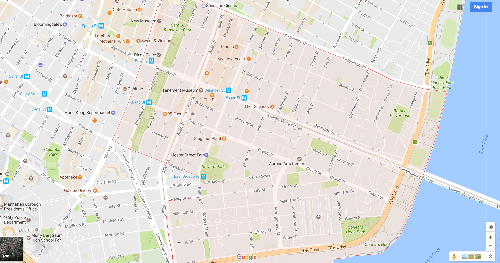
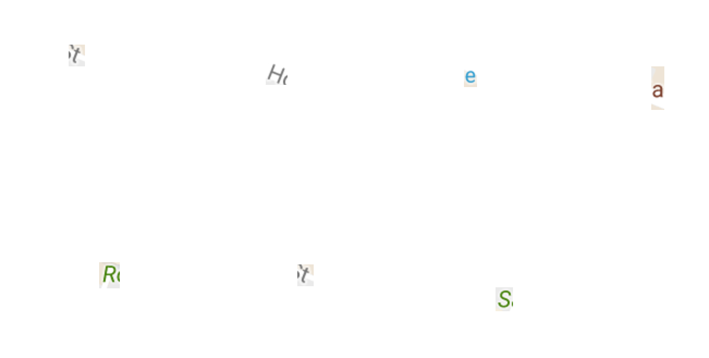

Idea 1

Fuck You / A Magazine of the Arts:
founded in 1962 by the poet Ed Sanders and originally published in a "secret location on the Lower East Side" of New York City.
Idea: to republish through screengrabs of the letters and names of streets of this location.
Examples:
Fuck
The Arts
